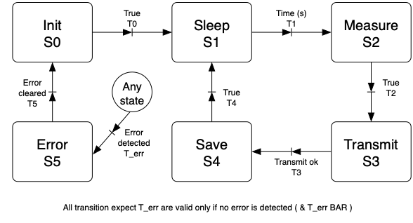

Node Software
- The node software is written in C++.
- The node is controled by a simple state machine (see bellow).
- In the current state of the system, there no real need for a state machine since all operations are pretty much sequential with minimum branching.
MK1 State machine

Figure 1: Simple node state machine.
States description
Init (state 0):
The state in which we initialise the system after powering-up.
- Read the config file in the external memory (SD card)
- Configure the system based on the config file
- Set the wireless connection variable
- Set the time intervall for the measurements
- etc...
- If the file/sd-card is absent trigger a config-file error and go to the error state.
- Get the current time from a time server
- Turn off the things we do not need.
- e.g. the arduino nano iot has an IMU onboard, we do not need it.
Sleep (state 1):
The state in which we sleep until it is time to measure. (Pretty self explanatory). When entered:
- Set an RTC alarm to wake up for the next measurement.
- This will use the internal RTC and or the external one (not sure yet).
- I might rely on the internal one but also set the external one in case we loose power at some point and reset the system.
- This would allow to keep the measure at a consistent interval.
- Put the system into the lowest power mode imaginable.
- Not sure yet if I will wake-up put put to sleep everything here or not.
- I might also use the IMU to trigger extra measurements based on vibrartions
- This could be cool to detect small quake or rock slide.
Measure (state 2):
The state in which we perfom the enviromental measurements. We can also add some system state measurements. For each measurement:
- Turn-on the sensor.
- Wait some time to make sure the sensor is stable (can take several minutes).
- Get the measurement.
- Apply correction/calibration / do the computation needed to have the number we will transmit.
- Turn off the sensor.
Some error handling:
- If problem, generate error code and or enter the error state.
Transmit (state 3):
The state in which we transmit the measured data to the server.
- Package the data to be transmited (to gain bandwith and time)
- This can be a simple "squeeze" things into a single word rather than have one per measurement.
- Will be defined later...
- Turn on the RF system (wifi, bluetooth, LoRa).
- Connect to the network.
- Get some network status data (RF signal strenght etc...).
- This add to the system status measurements.
- Connect to the server (Some sort of handshake would be nice).
- Transmit the data gathered in the previous state. (would be nice to have a transmition confirmation.)
- This include the environemental data and system status data.
- Turn off the RF.
Save (state 4):
The state in which we save the measured data to the external memory.
- Power up the SD card.
- Write the data to SD card with the .CSV format.
- This might change if I see that .CSV takes too much room.
- Power down the SD card.
Error (state 5):
The default state where we handle all systen breaking error detected by the system.
- TO BE COMPLETED